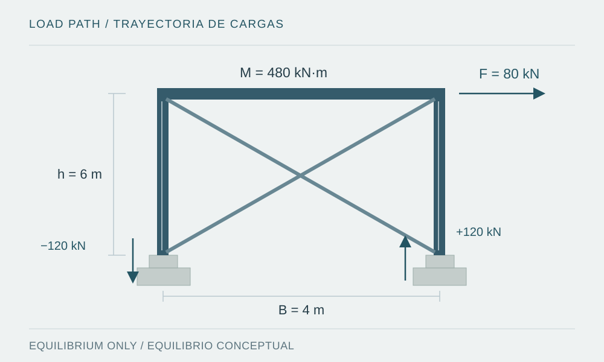

Mining structures require strength, stability, serviceability and equipment interfaces to work together; selecting member sizes is only one part of the process.

Figure provenance
- Source
- Original vector illustration prepared for this note.
- Tool
- SVG
- Date
- 2026-10-08
- Description
- Conceptual industrial frame with horizontal force, bracing, concrete pedestals and a foundation reaction couple.
- Usage
- Original educational diagram; not a software screenshot or project evidence.
Introduction
An equipment platform may look like a straightforward assembly of beams and columns. Its response also depends on equipment support points, connections, bracing continuity and foundation stiffness. For industrial and mining facilities, analysis should start with the operational purpose and the complete path of actions from their source to the ground.
The problem: equipment loading means more than weight
Input information should distinguish operation, empty or full equipment, maintenance, erection and relevant exceptional conditions. It should also define transmitted forces, eccentricities, excitation frequencies, displacement limits and interfaces with piping or conveyors. Manufacturer data need identifiable units, axes, combinations and operating conditions.
A reaction table without this context may lead to adding maxima that do not occur together or overlooking a starting force. The structural review should make unresolved assumptions visible. Missing equipment data should not be replaced with estimates presented as final values.
Development: examine the system before the member
Stability requires understanding how lateral displacement is restrained and how relevant buckling modes are controlled. Drawing a brace does not establish a reliable load path: connections, plates and anchors must transfer the anticipated forces and accommodate the intended deformations. Connection and base flexibility may affect both internal demands and displacements.
AISC 360-22 provides general steel design requirements and includes LRFD and ASD approaches [1]. AISC 341-22 adds provisions for seismic force-resisting systems within its scope [2]. A steel section alone does not establish system ductility or justify a particular response-reduction factor. The applicable design basis must be defined for the project and jurisdiction.
Documentation should also assign design and coordination responsibilities, as addressed by AISC 303-22 [3]. In practice, this means establishing who defines loads, connections, tolerances, erection sequences and temporary restraints. Stability during erection may differ from stability under the final operating condition.
Conceptual example: from lateral force to support
Consider an idealized frame carrying an 80 kN horizontal force 6 m above its base. The overturning moment is 480 kN·m. If that moment is resisted entirely by a vertical force couple with 4 m spacing, each side receives an axial-force increment of 120 kN, with opposite signs.
This assumes a planar mechanism and an idealized force transfer. Compatible gravity effects still need to be added, and uplift, anchors, base plates, pedestals and soil must be checked using the actual model. The example does not size a foundation or replace a three-dimensional assessment; it provides an elementary equilibrium check against model reactions.
Common mistakes
- Checking strength alone while omitting vibration, service deflections or equipment alignment.
- Assuming fixed bases and rigid connections without support from their actual details.
- Omitting relevant erection, fatigue or corrosion conditions because they are absent from a basic static case.
- Mixing LRFD and ASD factors or citing an edition without checking its official errata [5].
Conclusion and scope
Industrial design quality depends on continuity between equipment, model, connection, foundation and documentation. Each interface needs an assigned responsibility and a traceable assumption. References include AISC 360-22, 341-22, 303-22 and the 2019 industrial guide [4]; their automatic adoption in a Peruvian project is not implied. Original educational example, reviewed on 8 October 2026.
Sources and references
- ANSI/AISC 360-22 — Specification for Structural Steel Buildings (2022)
2022 edition of the general specification. Its applicability and errata should be identified in the project's design basis.
- ANSI/AISC 341-22 — Seismic Provisions for Structural Steel Buildings (2022)
2022 seismic provisions for systems within their scope; they do not make every steel structure a ductile system.
- ANSI/AISC 303-22 — Code of Standard Practice for Structural Steel Buildings and Bridges (2022)
2022 code of standard practice covering responsibilities and coordination. It does not replace the strength-design specification.
- AISC — Design Guide 7: Industrial Building Design, 3rd edition (2019), official catalog
The official catalog identifies Design Guide 7, third edition, 2019. A guide is not equivalent to an adopted code requirement.
- AISC — Revisions and Errata, official listing (reviewed 2026-10-08)
Official listing reviewed on 8 October 2026. Before design, check the corrections corresponding to each edition used.